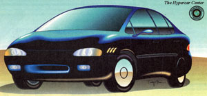
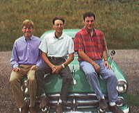
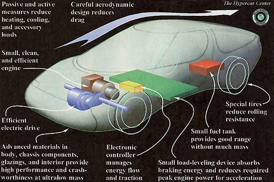

Mother's Interview
The future of the auto is nothing like its past.
One of the only noticeable differences between the car of today and the car of my childhood is that these days I can never get the darn window down; there are too many little button controls all over. I don't consider this a real improvement. While today's car is capable of locking itself, turning off its own lights, and cooling its interior, adding on more amenities has only succeeded in making the car more complicated. Adding on amenities hasn't done much for fuel efficiency and overall design either, and there's a whole pack of Americans who'd rather drive an old car than a new one, if for no other reason than they like to keep some things-like rolling down a window or changing the oil-within the realm of human abilities.
It's hard to imagine, with the runaway-train progression of technological advances in computers, electronics, and synthetic materials, how Detroit will be able to continue rolling out new models based on old designs in the 21st century. There is an increasingly popular theory incubating in places like universities, think tanks, and even among some (mostly foreign) auto manufacturers that the technology of cars is no longer applicable to cars. Let's just imagine Detroit's worst nightmare for a minute: What if a consortium of high-tech computer and electronics manufacturers and leaders from the aerospace and sporting goods industries pooled their intellectual and physical resources to redesign the car from the ground up? What materials would they use, and what structure would they use? What operating systems and fuel system would they use? What kind of car would it be?
As it turns out, these questions are no longer hypothetical. Scientists at the Rocky Mountain Institute in Snowmass, Colorado are in the final stages of organizing a consortium of high-tech manufacturers to make real a concept they have developed called "the hypercar." It will be a hybrid electric vehicle, combining the power of a conventional internal combustion engine with an electric motor powered by batteries having four to five times the capacity of today's standard car battery. It will be made of polymer composites rather than steel, created to be incredibly light and fuel efficient, capable in its best design of getting somewhere around 200 MPG in traffic. The design of the car is a flexible one, based solely on what industries decide is most efficient. Rocky Mountain Institute research associate Michael Brylawski sums up the hypercar concept: "The key to the hypercar is it combines these ultrasafe, ultrastrong materials that are light for fuel efficiency with a hybrid electric drive system in a very slippery, aerodynamic package." Rocky Mountain Institute's engineers see a day very soon when owning a car will be a lot like owning a personal computer. You will not buy a new car as often as you might "upgrade" your old car, adding software, doubling your capacity, and so on. This upgradable car made of light materials will be easy to reuse and recycle. The overall environmental benefits will be great but are almost a fringe benefit of a more efficient design. According to the philosophy of the Rocky Mountain Institute, the point is not to make an "eco-car." The point is to make a better all-around car.
In addition to developments in technology, recent policy initiatives have created a hospitable climate for the hypercar concept to become a reality. Automakers are now preparing to meet the requirements of President Clinton's Partnership for a New Generation of Vehicles, a joint government-industry project that requires the Big Three domestic automakers to design affordable vehicles that get up to 80 MPG by the year 2003. California has also passed a law requiring 10 percent of the vehicles in the state to be zero-emissions vehicles by 2003. The hypercar would qualify as zero emissions equivalent in a new category currently being considered by the California Resources Board. (If adopted, the category would only apply to California at this point.) Rocky Mountain Institute hopes that the hypercar demonstration project, built by the consortium, can have an impact on the way the car industry re sponds to these government edicts. Without mentioning the names of hightech companies who have begun devoting resources to the demonstration hypercar, RMI scientists predict the consortium is on the verge of beginning construction. And, they say, with or without the cooperation of the American automobile industry, cars based on the hypercar concept will likely be on the market within 5-10 years.
The Rocky Mountain Institute is a not-for-profit think tank near Aspen that develops market-oriented solutions to environmental problems. Their offices, in the highly resource-efficient home of founders Hunter and Amory Lovins, are a working model of sustainable living. With 16-inch thick foam-filled stone masonry walls, double-paned argon gas-filled windows, and a small solar panel system, the Lovins's heating fuel for the entire winter in the snowy, cold, high Rockies is a half a cord of firewood. The place is warm enough to support tropical plants including bananas, grapes, guava, and papaya, and is a working demonstration of high-tech devices-from the washing machine to the light bulbs-for sustainable living. While visiting RMI, I sat down with three of the institute's scientists who have been working on the development of the hypercar concept. We held a round table discussion about the barriers to and the possibilities for developing a better car.
-Molly Miller
Michael Brylawski is the research associate for advanced-composites manufacturing economics.
David Cramer is the senior research associate for materials and manufacturing.
Dr. Jonathan Fox is the senior research associate for emissions, air quality, and transportation.
Mother Earth News: What are the barriers that have kept manufacturers from applying new technology to develop more efficient automobiles?
CRAMER: Automakers are very conservative, technologically. No automaker is willing to move as fast as technology would allow, due to cultural inhibitions.
BRYLAWSKI: The reason that you don't see the technological change-even though the technology is available, and can be implemented if energy is put that way-is that the automakers are very used to making a certain type of car that uses steel as its main material, is internal combust-has an internal combustion engine-with gasoline as its fuel. And, they have over seven decades of experience and refinement in this technology so it's very comfortable... very familiar. And the level of refinement is so high, the level of investment in how to build these cars is so great, that it's very difficult to switch over tomorrow and say: We're going to start building hypercars. There's so much what they call "cultural inertia" in the automakers to prevent that.
CRAMER. Also, you have to think, in the past 20 years there have been many different consumer desires and policy changes that have incrementally pushed cars a certain way.
MEN : Environmental policies?
CRAMER: Environmental policies, crash-safety standards, just people wanting more air conditioning-air conditioning is a standard in vehicles-these sorts of amenities. And the way that's been handled is by, if they want an air conditioner, you add air conditioning. But you don't change how the whole, you know, climate control system is. You're still making the same car, but you're just adding an air conditioner. So it's tended to make cars heavier, more expensive, less fuel efficient.
FOX: One of these barriers has been the economics of cars in this country, and that is that the higher-end cars, that happen to be less efficient, generally subsidize the lower-end cars. So the Ford Escort may have never made a dollar for Ford-but the bigger cars that they make have a much higher profit margin in them. It essentially subsidizes the more efficient, smaller lighter cars.
FOX: Right. So, we think we'll see many different types of players trying to enter the automotive market.
MEN: New car companies?
FOX: Potentially new car companies. Maybe a consortium or two, some computer manufacturers, and maybe even some traditional automotive manufacturers from foreign countries, that aren't as committed with their resources to the steel-stamping industry that is so prevalent in this country.
MEN: I think it's kind of interesting what you said earlier about the car industry not being willing to take a blank slate look at redesigning the car. But the electric vehicle almost is that to too much of an extent. A hybrid is almost an amendment to the regular car, as opposed to totally taking out its entire fuel system. Your car has batteries and a fuel system just like today's cars.
BRYLAWSKI: To the consumer, but not to the producer. I mean, to GM, this is...
MEN: This is a totally new manufacturing process?
CRAMER. Yes, in fact, it's even more of an issue with design. An electric car-it seems like when people design an electric car, they say, "Let's start from a clean sheet and build an electric car." But if you say, "If we start from a clean sheet and [just] build a car;" then what do you get? Well, we think you get a hypercar.
BRYLAWSKI: And most electric cars today are basically conventional cars that they've stripped out conventional processes and put in batteries.
FOX: Except for the EV-1, which would be an incredible car if it wasn't carrying around that mass of batteries.
MEN: So what happened to this wave of electric vehicles? Now they're switching to hybrids. Did they all decide no one's going to pay $25,000 to buy an electric car?
BRYLAWSKI: At least $25,000.
FOX: Yeah, that's one of the fundamental problems with electric cars, is that they're more expensive and they don't provide the same functionality as today's cars. So they're relegated to being niche vehicles. And that's one of the fundamental differences between the hypercar concept, if it comes to fruition, is that it can have widespread availability in the market.
MEN: Because it's going to be cheaper.
FOX: The goal will be to be cheaper but, actually, because it'll be a better car. It'll provide all of the same attributes that users want today and meet the ones they'll want tomorrow-such as improved safety, and amenities, and also range. That's where the electric cars fall off is range, and also subtle environmental problems like battery recycling and disposal. When you have 1,500 pounds of batteries, it's a huge mass that you have to deal with every two to three years if they've been working correctly. And there's no real experience how well they're going to work.
BRYLAWSKI: The main issue with that is that battery vehicles do have emissions: they come from power plants. We call them "elsewhere-emissions vehicles." The emissions that you could get at the tailpipe of a hypercar aggregated could be less than a battery-electric car even under the cleanest scenarios.
MEN: How quickly do you think hypercar technology will be incorporated into marketable automobiles?
BRYLAWSKI: It depends on what kind of a hypercar you're talking about because they're all different. "Hypercar" is just a concept; it's not a specific technology. So some of the near-term hypercars won't get the 200-mile-per-gallon figures-maybe more towards 80-and they won't have fuel cells which produce virtually no pollution. They may have a gas turbine. These cars could come out, we think, within a decade.
FOX: And perhaps within five years.
BRYLAWSKI Because, for example, if you take GM's EV-1 car, and you made it into a hybrid, you'd have a two-seater hypercar.
FOX: Pretty close to a hypercar.
MEN: Is the EV-1 made out of light materials?
FOX: It is made out of light materials, it's very aerodynamic ...
MEN: But it costs $34,000.
FOX: The average price of a new car today is $22,000. The EV-1 is a niche vehicle, two-seater sports car. It's priced about right for its class.
MEN: So the first hybrid-electric are not going to be mass-produced, inexpensive cars?
FOX: It's unlikely. I mean, it's more likely that they'll be the high-end cars, and it'll diffuse down rapidly because it'll be a simpler, cheaper way to make a batch of cars.
BRYLAWSKI: It's generally the standard operating procedure of new technology
CRAMER: One important thing about this is, we're not saying that this would be the first hypercar. [Because automakers may have their own developments using these technologies. Ford's P2000 comes awfully close to the hypercar concept.] But what this demonstration project will do is build a hypercar right.
FOX: With our vision and with the resources we identified through multiple years of research as being the most viable technologies to go into this platform. And, really, the main focus is to demonstrate manufacturability of hypercars at a low cost. We know we can build one of anything. That's what this country is really good at.
CRAMER. But can you make them at all competitive with existing products?
MEN: And how far along are you in getting together a consortium for the demonstration project?
FOX: We have very interested parties that haven't signed on any dotted lines but have committed resources to the project, such as engineers and materials. And many of these are materials that haven't been in the automotive market traditionally. So these players are very interested in opening up a new market for themselves.
MEN: And are there some people who have been in the automotive industry?
CRAMER: Yes.
MEN: Can you say who?
ALL: No
MEN: What about a time line for when that might happen?
FOX: Our personal goal, in terms of the Hypercar Center, is to have the product finished early enough to have an influence in where the Original Equipment Manufacturers are going with their block programs and their project programs. The PNGV [Partnership for the New Generation of Vehicles] is trying to determine what are going to be the best technologies to produce an 80-mile-per-gallon car that the government has challenged them to do.
FOX: The PNGV deadline is 2003, and they're rolled back one deadline already, so that's not etched in stone. But we'd like to be done far enough ahead of that so that we can have a positive influence in their thinking and the way they're viewing it, because they're getting close to our line of thinking with this Ford car-the P2000-which is essentially an aluminum aerodynamic lightweight vehicle. It's not as light as an advanced composite car could be.
BRYLAWSKI: But the other thing about the demonstration vehicle, we're go ing to try to be very flexible in the technol ogy. Because what Jon said is very important-just as there was a lock-in on steel cars and internal-combustion engines, there may be a tendency to lock in the technology for the next generation of vehicles. For example, the materials competition, where you have steel, which is rapidly trying to shed its own mass due to design principles, aluminum, and the polymer industry, all fighting to become the dominant material in the new automobiles. And it may be tempting for automakers to lock into one choice. We emphasize composites, but we have specs. The hypercar, once again, is a concept and if a metal can achieve the safety and mass production requirements that a hypercar would need to be very efficient yet high-performance, all for the better, basically.
FOX: Right. We're not wed to any one particular technology or material.
MEN: So in the vehicle you designed, you don't name anything too specifically.
CRAMER: Right. So sometimes people say, "Well, I want to see your hypercar." We say, "No, no, no, it's a concept; it's an approach to building cars."
MEN: One of the main criticisms of designing an auto using light materials is the safety factor. Are we safer in bigger cars?
CRAMER: Well, first of all, there's a big misconception there in that we're not talking about small cars; we're talking about light cars. And, you can have a car the size of a Ford Taurus that's half the mass, and you can have it be just as crashworthy because the materials that you'd use, and the way you'd design the car, can absorb energy just as well as the other car.
FOX: But the other thing is, what's happening in the market today is this mass armament-type phenomenon, where sport-utility vehicles are becoming more and more popular.
MEN: So would you consider this trend an obstacle to this idea?
CRAMER: Well, it's also an obstacle to general demeanor on the road. If I'm driving a Ford Expedition, then I might be making myself safer.
BRYLAWSKI: But not necessarily.
CRAMER: Not necessarily. But I'm also putting everyone else that I might hit, or who might hit me, at a higher risk because I'm putting them at a disadvantage.
FOX: And the federal government recently acknowledged this, and there's talk of regulating the weight of sport-utility vehicles. Sport-utilities are heavy cars, but they're not very safe. They roll over very easily, and over half the accidents today that kill people are not collisions; they're single-car accidents. And so when you get these vehicles where people feel safe, they're driving faster than they should-they're actually exceeding the limits of the vehicles. So there's the notion of perceived safety, which is what makes you buy a big car, and then there's the actual safety. Does that big car absorb energy in a crash? Many of these big cars are so stiff that if they hit a very solid tree, it transmits the shock directly to the occupants. And that's much less safe then hitting it in a light car that's designed to absorb its own energy, so there's a lot of mitigating factors.
BRYLAWSKI: We emphasize these technologies in the hypercar concept can be used to make a sport-utility car as well.
MEN: A hyper-sports-utility?
FOX: Yes, I mean, everything that people like in sport-utility vehicles-not just safety, but durability and ruggedness, and what have you-is part of the actual technology of the hypercars. For example, our electric drive system has very high torque at low speed. The application could be towing capacity or hill climbing. And composite materials are incredibly durable. If people really want big vehicles, you could have hyper-sports-utilities.
FOX: And many traditional cars are being made with composites, as energy-absorbing elements, in their bumpers. So we're essentially building that into the car from the ground up, as opposed to adding it on.
MEN: Let's talk about the inherent good or evil of cars in general. Living and working in a remote part of Colorado, I assume you guys do a lot of driving around...
CRAMER: No, we bike everywhere.
FOX: I own two cars, but 80% of my miles are on bicycle.
MEN: There's some irony there, considering your life's work. If you feel you should ride your bike everywhere, wouldn't you also feel we should be working to encourage a less car-oriented society?
BRYLAWSKI: We have two main philosophies on that. The first one is that [hyper]cars solve two of the most major transportation-oriented problems, which are air and oil-oil security, the problems we've had in the Middle East, etc. Amory says it's basically like finding an OPEC under Detroit in terms of how much oil we could save if everybody had these technologies. And then, of course, air quality.
MEN: But cars aren't the only way to solve those problems.
CRAMER: Right. If everyone left their cars at home and weren't driving them.
FOX: Right. But, when people live in suburbs today, there's no way they can get to work when there's no infrastructure.
MEN: So, we have to accept the prevalence of cars?
FOX: In the short term.
BRYLAWSKI: It isn't a panacea, but it can significantly help those two problems. And then it'll allow us to focus more effort on problems that it doesn't solve, in terms of equity and mobility and congestion.
MEN: Another problem with cars is that they are largely responsible for urban sprawl.
CRAMER: Well, the thing is, technology changes can occur relatively rapidly. Demographic shifts and changes in land use happen over decades. And if we can, within a decade, get the hypercar on the road and start helping the environment while, concurrently, RMI's Green Development program helps to rethink land-use planning and building design, and to promote resource-efficient living, then we start going to a larger system of transportation. It's a path to sustainability, but it's a necessary element.
FOX: Right. And also-when we look at how the United States exports its culture, so that the desires of other countries are really to have automobility-one thing we want is for them to leapfrog the development path that we took.
MEN: You mean the Third World?
FOX: Third World. China, as an example of a country that has tremendous economic wealth: they have a middle class of 200 million people that can afford to buy cars today. They just don't have 'em-but they want them.
BRYLAWSKI: The conventional automakers are putting their meat hooks-they're taking their obsolete technologies into these countries, their old tooling, their old technologies.
FOX: That is not the path that we want them to go on. And they don't really want it, either. So we're saying: China, why don't you rethink this development path, and go right to a hypercar-based economy? Those are the kinds of low hanging fruit that really could make a transformation. I'm not saying that cars are their mobility solution at all-but, to some extent, they're going to be going with cars. And it might actually be with trucks so why not make hypertrucks for moving their agricultural products around China and many other developing countries, where trucking is actually 80% of their fuel consumption for farming and agriculture use.
BRYLAWSKI: Some environmentalists have said: Well, if you take away the problems of the cars, you're going to have more cars; you're going to make cars perfect. But, we emphatically think that if you solve some of the problems, you can again focus your attention on other ones like congestion and land-use planning.
FOX: Cars may be our enemies, but we see them as the means to getting to a point where we can rethink how we actually use them.
MEN: Anything else you'd like to add?
CRAMER: Just essentially what we're talking about is a car that if your average person walked into the dealership and saw the hypercar-it could be a hyper-Taurus, it could be a hyper-Suburban, or a hyper-Miata-they'd buy it, because they'd think it's a better car...whether they care about the environment or not.
MEN: I might want one.
BRYLAWSKI: We'll try to get you one in ten years.
For more information about the Hypercar contact the Rocky Mountain Institute, 1739 Snowmass Creek Rd, Snowmass, CO 816549199. (970) 927-3851. http://www.rmi.org .
|
 Dave, Jon and, Mike perched atop some antiquated, but gorgeous technology. |
 |
 |
|
|
|
|